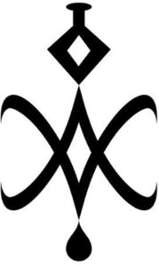

Trade Mark Journal No.2025/040 3 October 2025
WO0000001875556 (41)
Office of origin: Australia
Date of International Registration:9 July 2025
Date of designation in the UK:
9 July 2025

International priority date claimed: 9 January 2025
(Australia)
(2510209)
- Class 41
- Coaching [training]; coaching [education and training]; coaching in the field of sports; sports coaching; educational services in the nature of coaching; training services in the nature of coaching; personal coaching [training]; sports teaching, coaching and instruction; sports coaching services; sports education, coaching and instruction; life coaching [training]; career counseling and coaching [training and education advice]; training or education services in the field of life coaching; life coaching (training); personnel and personal development training and coaching services; life coaching [training services]; career counselling and coaching [training and education advice]; sports teaching services; mentoring [training]; life coaching services [training or education services]; professional coaching services in the field of voice-over; teaching services relating to sports; mentoring [education and training]; life coaching services [training services]; personal coach services [fitness training]; providing group coaching and in-person learning forums in the field of leadership development; personal coach services [boot camp training]; sports training; peer to peer coaching services in the field of voice-over; organising and conducting of basketball training programs for young people; mentoring [education]; organizing and conducting of basketball training programs for young people; teaching; providing group coaching in the field of voice-over; teacher training; arranging and conducting of soccer training programs; arranging and conducting of soccer training programmes; winter sports teaching; teaching for skiing; arranging and conducting of basketball training programs for young people; instruction services relating to sports; sports instruction; sports education services; sports instruction services; organizing and conducting youth sports programs; teaching, entertainment and sports services; arranging and conducting of football [soccer] training programs; sports training services; arranging and conducting of American football training programmes; organising and conducting youth sports programs; arranging and conducting of youth football [American football] training programs; arranging and conducting youth sports programs; arranging and conducting of football [American football] training programs; education, teaching and training; training services relating to sports; arranging and conducting of American football training programs; educational and training services relating to sport; training; arranging and conducting of football [American football] training programmes; arranging and conducting of youth American football training programs; arranging and conducting of youth soccer training programmes; arranging and conducting of youth soccer training programs; arranging and conducting of youth football [American football] training programmes; coordinating and leading youth sports programs; organising of training courses in teaching institutes; arranging and conducting of youth American football training programmes; organizing and conducting of sporting events; arranging and conducting of football [soccer] training programmes; arranging and conducting of fitness classes; educational and instruction services relating to sport; arranging and conducting of youth football [soccer] training programs; sports tuition, coaching and instruction; sports refereeing; conducting of training seminars; teaching provided by clubs; career counseling relating to education and training; organising and conducting of sporting events; conducting fitness classes; sports refereeing and officiating; arranging and conducting of youth football [soccer] training programmes; educational services relating to sports; conducting physical fitness conditioning classes; organising and conducting of training courses for students; teacher training services; organizing and conducting of sports events; organizing and conducting of training courses for students; educational and training services relating to games; career counselling relating to education and training; consulting services in the field of physical fitness boot camp training; organizing and conducting sports competitions; personal development training; arranging and conducting of training seminars; conducting of training courses; conducting of instructional, educational and training courses; organising and conducting of sports events; providing sports training facilities; medical training and teaching; chiropractic teaching; education services relating to sports; organizing of training courses in teaching institutes; arranging and conducting sporting events; conducting of instructional, educational and training courses for young people and adults; organisation of training courses in teaching institutes; conducting prenatal fitness classes; shamanic mentoring [training]; arranging and conducting sports events; organisation and conducting of training courses for students; organisation and conducting of sporting events; sports officiating; conducting boot camp fitness classes; organising and conducting educational courses; education and training consultancy; conducting of workshops [training]; teaching in the field of medicine; organising business training; consultancy relating to education and training; organising and conducting sports competitions; organizing and conducting of sporting and cultural events; arranging and conducting of training courses; organising and conducting of educational courses; organization and conducting of sporting events; arranging and conducting of sporting events; conducting of training workshops; teaching academy services.
Cheryl Harris